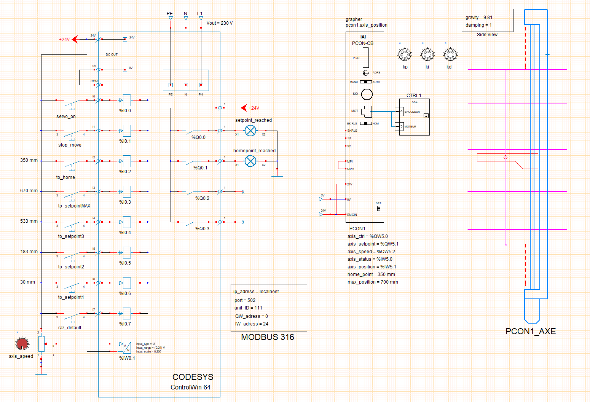
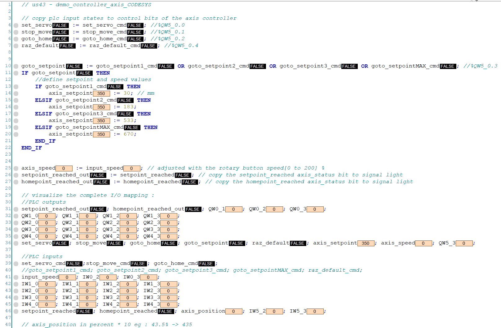
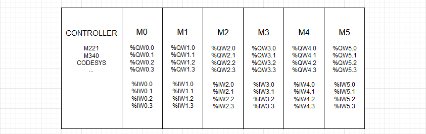

Contrôleur d'axe
Préambule
WRsimulateur permet d'insérer des contrôleurs d'axe dans les folios. le controleur d'axe simulé est une implémentation partielle du contrôleur d'axe SCONS2 de la société IAI. SCON2-CE0401-1.1A.pdf
L'exemple 43-demo_controleur_axe_CODESYS.xrs illustre la mise en œuvre d'un contrôleur d'axe IAI-SCON2 pour contrôler le positionnement dune table élévatrice.
Simulation contrôleur d'axe CODESYS

Description
- L'automate virtuel CODESYS ControlWin 64 est connecté au contrôleur d'axe simulé par WRSimulateur via Modbus TCP-IP.
- L'interaction entre l'automate et le contrôleur passe par une table d'échange qui comprend 5 mots. (%QW5.0 à %QW5.2 et %IW5.0 à %IW5.1 dans l'exemple)
- Le programme du projet 43-demo_controleur_axe_CODESYS.project ajuste les bits de contrôle du registre axis_ctrl du contrôleur selon l'état des boutons connectés à ses entrées.
- La vitesse et le point de consigne sont imposés par le programme (lignes 9 et 10 du programme ci-dessous)
- On peut tester le comportement du positionnement de la table mobile en forçant les valeurs des registres axis_setpoint et axis_speed
- Le contrôleur d'axe intègre un asservissement de position PID. Les paramètre Proportionnel, Intégral et Dérivé sont ajustables avec les boutons Kp, Ki et Kd.
- On peut observer avec le grapheur la position de l'axe en utilisant la variable spécifique axis_position.
Programme contôleur d'axe CODESYS

Paramètres
Les adresses des mots API utilisés dans les tableaux suivants sont donnés à titre d'exemple. Il est possible de choisir des adresses différentes dans la cartographie de l'API virtuel:

| Paramètre par défaut | Description |
|---|---|
| In = 10 A | Calibre du contrôleur d'axe |
| axis_ctrl = %QW5.0 | Bits de contrôle |
| axis_setpoint = %QW5.1 | Consigne de position |
| axis_speed = %QW5.2 | Vitesse de déplacement de l'axe en % |
| axis_status = %IW5.0 | Statut du conrôleur d'axe |
| axis_position = %IW5.1 | Position de l'axe en % |
| home_point = 0 mm | Valeur de la position du point home en mm |
| max_position = 700 mm | Valeur de la position du point max en mm |
| axis_ctrl | Description des bits |
|---|---|
| set servo (%QW5_0.0) | Autorise le fonctionnement du contrôleur d'axe [False,True] |
| stop move (%QW5_0.1) | Demande l'arrêt du mouvement [False,True] |
| goto home (%QW5_0.2) | Demande le retour à la position home [False,True] |
| goto setpoint (%QW5_0.3) | Demande le positionnement au point de consigne [False,True] |
| raz default (%QW5_0.4) | Demande la RAZ des défauts (surcharge) [False,True] |
| axis_status | Description des bits |
|---|---|
| setpoint_reached (%IW5.0) | La position de consigne est atteinte [False,True] |
| homepoint_reached (%IW5.1) | La position Home est atteinte [False,True] |